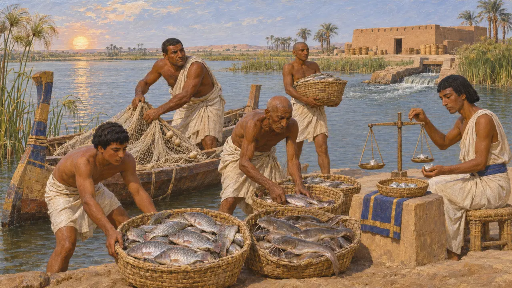
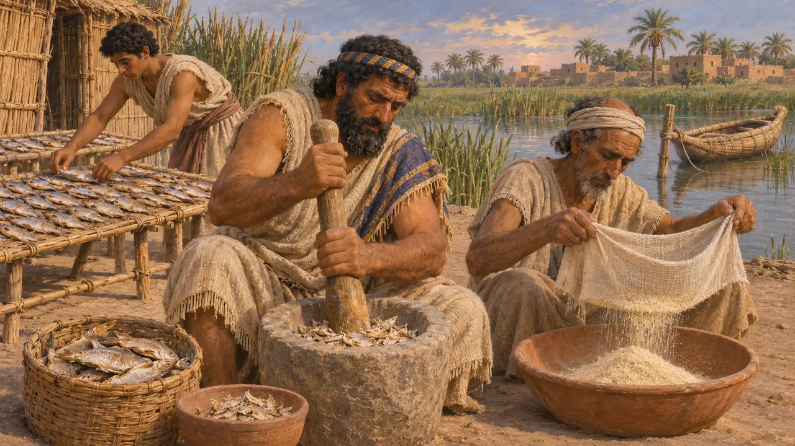
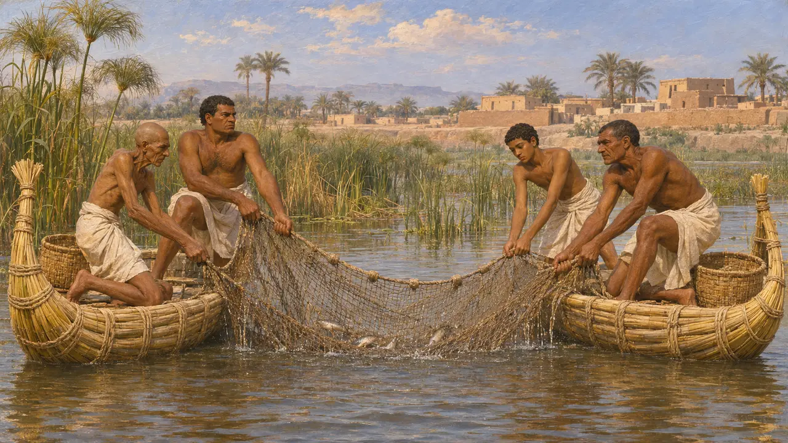
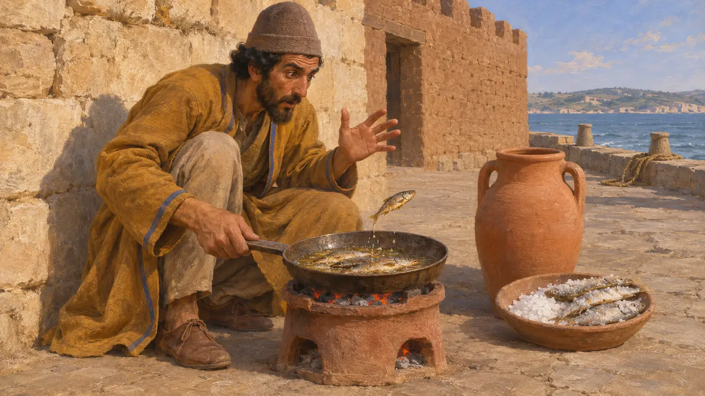

渔夫码头
阿契美尼德世界河流、沼泽与海洋上的捕鱼，公元前6至前4世纪
从巴比伦的沼泽到尼罗河和爱琴海沿岸，鱼养活了帝国的许多人。希腊作家描述过靠鱼为生的整个群落，波斯国库也从埃及的渔场获取钱财。很少有史料讲到普通渔夫如何劳作，因此他们的日常生活多半要靠更古老的墓室绘画和运过海的咸鱼来了解。
游戏中： 码头背靠水边而建，派出小船撒网捕鱼，大车再把鱼运往粮仓。各家口粮中最多有一半可以是鱼或肉。这是一种简化：许多渔夫是在岸边用网和鱼笼捕鱼，也没有史料描述波西斯本土河流上的捕鱼，所以那里的码头是我们的推断。

莫伊里斯湖的鱼
古代记述希罗多德说，法尤姆的莫伊里斯湖水六个月流入，六个月流出。他说，水流出时，渔获每天为王室国库带来一塔兰特白银，水流入时每天带来二十米纳。他还说，埃及向大流士缴纳的700塔兰特贡赋是在湖鱼收入之外的。他的数字可能有所夸大，但表明这处渔场被视为国家的收入来源。
Herodotus 2.149, 3.91

靠鱼为生的人们
古代记述希罗多德说，巴比伦有三个部落只吃鱼，把鱼晒干、捣碎，再用亚麻布筛过。他说埃及人吃干鱼或咸鱼，而祭司拒绝吃鱼。约公元前325年，亚历山大的海军将领尼阿库斯报告了阿拉伯海边格德罗西亚海岸的食鱼族，他们用棕榈树皮做网，把干鱼磨成粉。这些都是外人的记述，往往把这些人写得怪异。
Herodotus 1.200, 2.37, 2.77; Arrian, Indica 29

尼罗河上的小舟与渔网
见于史载埃及墓葬浮雕描绘了渔夫乘轻便的纸莎草小舟，在两船之间拖曳拖网，或使用手网、篮子和钓线。萨卡拉的古王国时期提墓是著名的例子。这些场景远早于波斯征服，且是为富人的墓葬而作，但纸莎草小舟和渔网在河上一直沿用，希罗多德也描述过他那个时代沼泽居民的渔网。
Mastaba of Ti, Saqqara; D. J. Brewer and R. F. Friedman, Fish and Fishing in Ancient Egypt, 1989; Herodotus 2.95

渡海而来的咸鱼
见于史载腌制使鱼得以远行。公元前5世纪，科林斯的一座建筑存放着来自西地中海的陶罐，罐中的鱼骨显示当时有腌鱼贸易。希罗多德写到公元前479年塞斯托斯的一名守卫正在煎咸鱼，他说那鱼竟在锅中跳了起来。这种贸易有多少到达波斯帝国的城镇，证据很少，大多数人可能吃的是本地捕获的鱼。
M. L. Zimmerman Munn, Corinthian Trade with the Punic West, 2003; Herodotus 9.120
来源
- Herodotus 2.149, 3.91
- Herodotus 1.200, 2.37, 2.77, 2.95, 9.120
- Arrian, Indica 29
- D. J. Brewer and R. F. Friedman, Fish and Fishing in Ancient Egypt, 1989
- M. L. Zimmerman Munn, Corinthian Trade with the Punic West, 2003